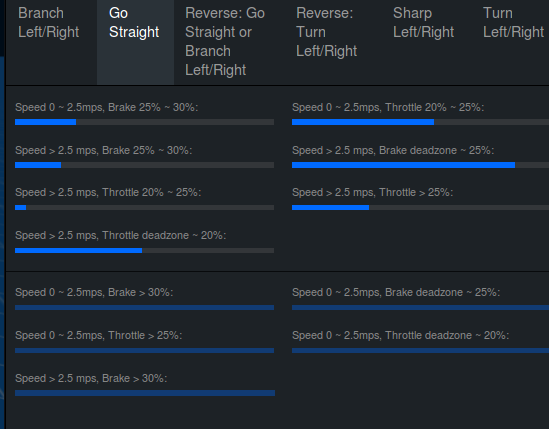
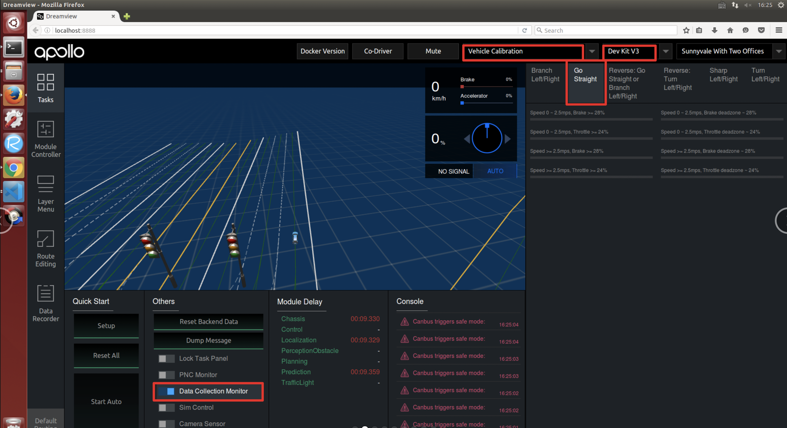
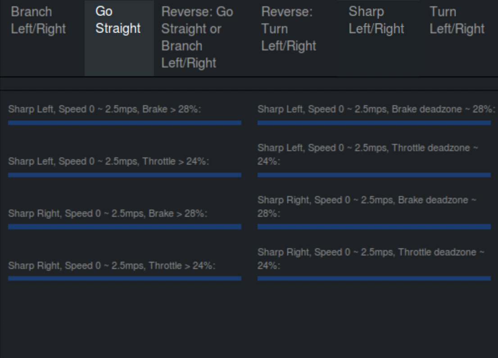
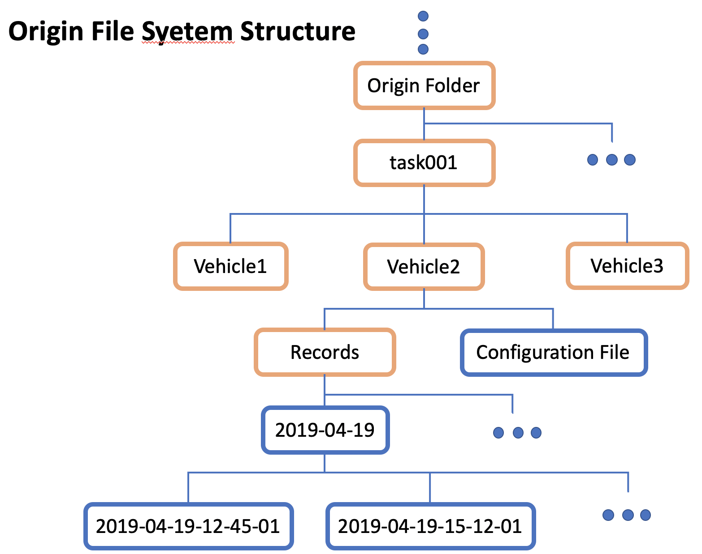
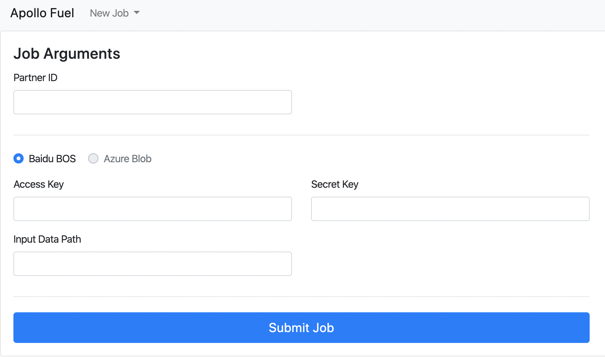
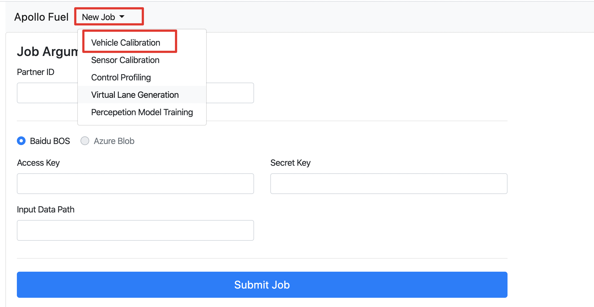
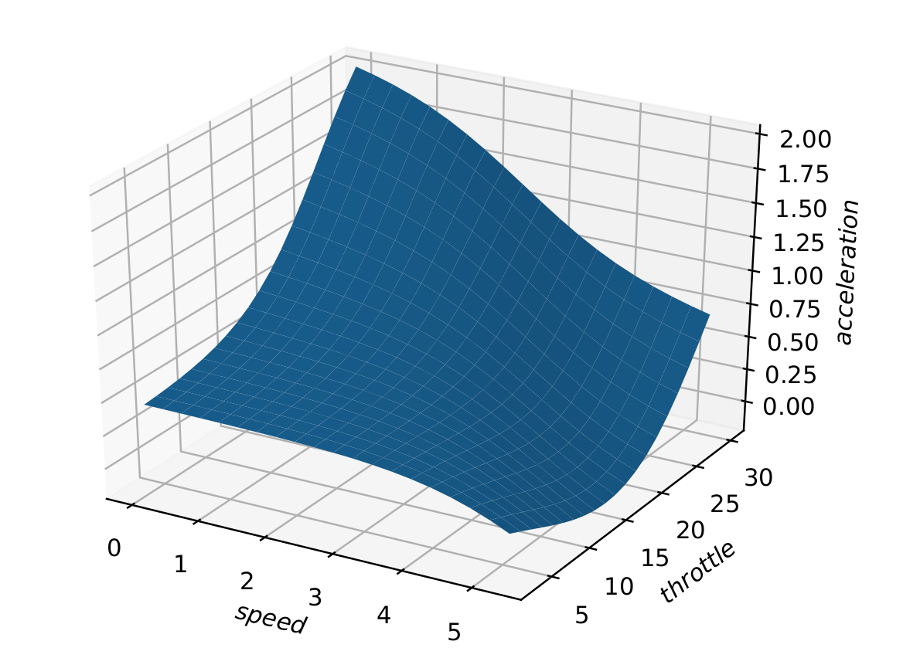
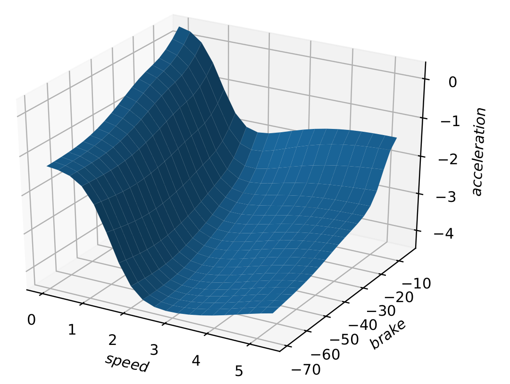

循迹搭建--车辆动力学云标定#
概览#
车辆云标定是通过采集车辆底盘油门踏板量、刹车踏板量、车辆速度、加速度作为车辆纵向动力模型的输入，通过机器学习的方式，生成相应车辆的踏板标定表，生成的标定表数据量大，精度高，提高车辆的控制精度。车辆踏板标定系统主要包括三个部分：
-
在
DreamView数据采集监视器内采集标定数据； -
标定数据上传至BOS云盘，提交标定任务；
-
生成用于性能评估的可视化标定结果。
在DreamView中，提供了一个踏板标定数据采集的监视器，用于监视采集标定数据的过程。通过配置文件设定标定条件（case），每个数据帧代表一种标定条件，每次采集数据时，每符合标定条件一次，则进度条增加一点，直至进度条增加满为止。

前提条件#
主要步骤#
-
修改标定配置文件
-
标定数据采集
-
标定任务提交
-
可视化结果分析
百度云对象存储BOS注册#
注册方法参考百度云对象存储BOS注册与基本使用向导
开通云服务账号#
请与商务部门联系开通云服务账号，需要提供上一步骤中注册的Bucket名称、所属地域和用户邮箱信息
修改配置文件#
在开始标定前，需要根据实际车辆的最大速度、速度、油门、刹车踏板的限制，进行用于车辆踏板标定的数据采集配置，来适配车辆的标定，满足标定数据能够尽可能多的覆盖车辆踏板的有效范围。我们设置了开发套件的默认车辆标定数据采集配置文件，在文件apollo/modules/calibration/data/dev_kit/dreamview_conf/data_collection_table.pb.txt内，开发者在了解了标定文件构成后，如有需要可以自行修改需要的数据采集配置文件，通常情况下使用默认标定配置可以覆盖小车大部分踏板控制范围，建议开发者不需要单独修改此配置文件，使用默认标定配置即可。默认标定配置文件内主要设计了小车的标定条件如下：
车辆前进模型
-
速度条件
-
低速 0 ～ 2.5m/s
-
高速 >= 2.5m/s
-
油门条件
-
小油门 Throttle deadzone ~ 24%
-
大油门 Throttle >= 24%
-
刹车条件
-
缓刹车 Brake deadzone ~ 28%
- 急刹车 Brake >= 28%
上述的Throttle deadzone表示车辆油门踏板的不产生加速度的无效区段，一般设在车辆刚能起步的附近，开发套件给出的默认值是5%，开发者可以根据实际车辆的情况修改此参数；Brake deadzone表示车辆刹车踏板的不产生减速度的无效区段，一般设在较低的踏板开度时，开发套件给出的默认值是3%，开发者可以根据实际车辆的情况修改此参数。此参数设置在apollo/modules/calition/data/dev_kit/vehicle_param.pb.txt文件内throttle_deadzone和brake_deadzone，在标定开始前，就要先把改参数确定好，后面进行数据训练时上传的配置文件，也需要对应使用该参数。
根据如上标定条件，即可匹配出车辆的所有标定条件，共8种条件，分别为： - 低速小油门 - 低速大油门 - 高速小油门 - 高速大油门 - 低速缓刹车 - 低速急刹车 - 高速缓刹车 - 高速急刹车
确认好上述标定条件后，通常情况下使用默认标定配置可以覆盖小车大部分踏板控制范围，如果需要修改配置文件，则需要将apollo/modules/calibration/data/dev_kit/dreamview_conf/data_collection_table.pb.txt 中Go Straight部分配置进行修改，其它部分配置代码无需修改，无需删除，通过启动dreamview后重新选择车辆后配置生效，具体修改代码如下：
frame_threshold: 20 //设置数据帧周期，当前为20ms
total_frames: 4000 //设置每一个标定case数据帧总量，当前设置为4000帧，可根据实际情况调整，数据量越大采集标定数据时间越长
scenario {
key: "Go Straight"
value {
feature {
name: "Forward"
range {
criterion {
field: "gear_location"
comparison_operator: EQUAL
value: 1
}
}
}
feature {
name: "Steering Angle"
range {
name: "Straight"
criterion {
field: "steering_percentage"
comparison_operator: GREATER_THAN_OR_EQUAL
value: -1
}
criterion {
field: "steering_percentage"
comparison_operator: LESS_THAN
value: 1
}
}
}
feature {
name: "Speed"
range {
name: "Speed 0 ~ 2.5mps"
criterion {
field: "speed_mps"
comparison_operator: GREATER_THAN_OR_EQUAL
value: 0.2
}
criterion {
field: "speed_mps"
comparison_operator: LESS_THAN
value: 2.5
}
}
range {
name: "Speed >= 2.5mps"
criterion {
field: "speed_mps"
comparison_operator: GREATER_THAN_OR_EQUAL
value: 2.5
}
}
}
feature {
name: "Accelerator (Decelerator)"
range {
name: "Throttle deadzone ~ 24%"
criterion {
field: "throttle_percentage"
comparison_operator: GREATER_THAN_OR_EQUAL
vehicle_config: "throttle_deadzone"
}
criterion {
field: "throttle_percentage"
comparison_operator: LESS_THAN
value: 24
}
}
range {
name: "Throttle >= 24%"
criterion {
field: "throttle_percentage"
comparison_operator: GREATER_THAN_OR_EQUAL
value: 24
}
}
range {
name: "Brake deadzone ~ 28%"
criterion {
field: "brake_percentage"
comparison_operator: GREATER_THAN_OR_EQUAL
vehicle_config: "brake_deadzone"
}
criterion {
field: "brake_percentage"
comparison_operator: LESS_THAN
value: 28
}
}
range {
name: "Brake >= 28%"
criterion {
field: "brake_percentage"
comparison_operator: GREATER_THAN_OR_EQUAL
value: 28
}
}
}
}
}
标定数据采集#
准备#
完成配置文件修改后，将车辆移动至适合标定的场地后，启动apollo，并执行以下命令：
bash apollo.sh build_opt
bash scripts/bootstrap.sh
在浏览器打开DreamView，进行下述步骤：
1、在--setup mode--内，选择vehicle calibration（车辆标定）选项，在--vehicle--选择Dev_Kit；
2、在Others按钮区，选择Data Collection Monitor（数据采集监视器），选择Go Straight按钮。
如下图所示，为标定数据才采集面板。

开始采集#
准备所需channel： 车辆标定数据采集开始前，一定要检查标定需要的channel数据是否正常，否则会造成采集的标定数据缺少信息而造成后续生成标定表失败。需要采集包含车辆底盘、定位信息的数据作为输入，所需要的channel如下表所示：
| 模块 | channel名称 | 检查项目 |
|---|---|---|
| Canbus | /apollo/canbus/chassis |
确保能正常输出数据 |
| GPS | /apollo/sensor/gnss/best_pose |
确保能正常输出数据,sol_type: 选项显示为NARROW_INT |
| Localization | /apollo/localization/pose |
确保能正常输出数据 |
为获取上述channel，在命令提示行内启动canbus模块、GPS模块、localization模块：
bash scripts/canbus.sh
bash scripts/gps.sh
bash scripts/localization.sh
通过cyber_monitor检查上述channel数据是否反馈正常。
在DreamView界面点击左侧边栏，选择Module Controller，可以看到Canbus开关已经打开，这时开始点击Recorder开关，（请务必切记先打开

这时，我们使用遥控器遥控车辆，根据右侧数据采集监视器，采集相应标定条件的车辆数据，直到采集监视器内各标定条件进度条（蓝色）全部集满后，点击关闭Recorder开关，关闭数据记录，结束车辆标定数据采集。

所有采集的标定数据都保存在apollo/data/bag/目录下，找到以年-月-日-时-分-秒命名的文件夹，根据时间找到属于车辆标定采集的数据。我们可以分批采集数据，即每一次可以采集一部分数据，这样数据会记录在不同的年-月-日-时-分-秒文件夹，（注意：默认情况下，数据采集后会在apollo/data/bag/文件夹下生成2个年月日时分秒相似的文件夹，分别以年-月-日-时-分-秒和年-月-日-时-分-秒_s命名，开发者可以不用理会_s后缀的文件夹，只需要使用年-月-日-时-分-秒文件夹内录制的标定数据即可）也可以一次全部采集，这样所有的数据都记录在同一个文件夹内，通常完成上述标定条件的车辆标定数据采集需要20分钟左右。
标定任务提交#
文件夹结构要求#
1. 准备百度云对象存储BOS服务
在使用云标定服务前，需要准备百度云对象存储BOS服务用于存放标定预处理后的数据。
注意: 必须使用开通过权限的 bucket，确认Bucket名称、所属地域和提交商务注册时的Bucket名称和所属区域保持一致。
2. 和Apollo开发套件商务联系开通云标定服务账号
3. 上传预处理后的数据至BOS
在上传数据之前，请注意以下几点：
1）请将标定数据按照如下文件夹结构进行放置：

2）Origin Folder确保是BOS的根目录，确保task001目录是在BOS根目录下创建的（根目录：登录BOS存储服务器后首先看到的目录即为根目录，一般是Bucket name目录）；
3）task001、task002...代表一次车辆标定任务文件夹，即每次标定任务提交时，会训练一个task文件夹内的车辆数据；task文件夹上一层（Origin Folder）可以是BOS根目录或其他目录；
3） Vehicle1、Vehicle2...代表标定的车辆文件夹，可以根据实际情况，按照车辆名称+编号的形式命名，如ch01、ch02等。一个task文件夹下内可以包含多个Vehicle车辆文件夹，在一次任务提交中标定多个车辆；
4）Records文件内导入采集的车辆标定数据，车辆的录制数据在apollo/data/bag/目录下；
需要注意：Records文件夹下需要有2层子文件夹，第一层为大时间（年月任）文件夹结构需要图上图保持一致；
5） Configuration File即为vehicle_param.pb.txt（车辆配置文件），该文件在apollo/modules/calition/data/dev_kit文件夹内，将该文件夹下的vehicle_param.pb.txt拷贝至BOS对应的车辆标定文件夹下，如上图Vehicle2文件夹内；
6）总结上述文件夹结构：
BOS根目录 -> Task Folder ->Vehicle Folder -> Records + vehicle_param.pb.txt
4. 提交标定任务据至BOS
打开Apollo云服务页面，如下图：

在New Job下拉框中选择Vehicle Calibration选项，根据实际情况填写Partner ID（请与商务联系）、Access Key（按BOS账号实际情况填写）、Secret Key（按BOS账号实际情况填写）、Input Data Path填写到根目录（在本例中填写为"task001"，因为“task001”在BOS的根目录），最后点击Submit Job按钮提交。

5. 获取标定结果及标定表
- 云标定任务完成后，将在注册的邮箱（请与商务联系）中收到一封标定结果邮件。如果标定任务成功，将包含标定表及标定结果图片。
6. 将标定表写入控制配置文件中
- 生成的标定表以
车型_calibration_table.pb.txt命名，将标定表内的标定数据为calibration_table字段，把全部数据拷贝替换至apollo/modules/calibration/data/dev_kit/control_conf.pb.txt下对应的lon_controller_conf字段下面的calibration_table段内。
注：云标定数据片段示例（截取了前4段）
calibration {
speed: 0.0
acceleration: -1.3040223121643066
command: -69.0
}
calibration {
speed: 0.0
acceleration: -1.2989914417266846
command: -65.63157894736842
}
calibration {
speed: 0.0
acceleration: -1.2903447151184082
command: -62.26315789473684
}
calibration {
speed: 0.0
acceleration: -1.2760969400405884
command: -58.89473684210526
}
结果显示#
标定表和结果，以邮件的形式，发送至与BOS存储绑定的电子邮箱中。
- 油门踏板标定结果

- 刹车踏板标定结果

NEXT#
车辆云标定能够提供精度较高的车辆踏板标定表，对于自动驾驶的控制精度有显著提升。当然，使用D-KIT文件夹内默认的标定表数据，也可以进行循迹等自动驾驶控制。
现在，您已经完成车辆动力学标定，接下来可以开始车辆循迹演示
常见问题#
1. 提交后，显示UNAUTHORIZED,如下图所示

出现该问题，一般是Partner ID输入有误。
2.在进行车辆标定时，收到如下报错邮件，数据完整性检查出现错误

排查方法：
1. 查看文件夹结构是否正确；
2. 查看是否在车辆文件夹内添加车辆配置文件（vehicle_param.pb.txt）
3. 查看录制数据包内是否存在gps/localization数据：
- 通过cyber_recorder info xxxxxx.record.xxxxx
检查采集数据内是否存在下面3个channel的数据：
- /apollo/canbus/chassis
- /apollo/sensor/gnss/best_pose
- /apollo/localization/pose
- 下图为正确的数据包示意